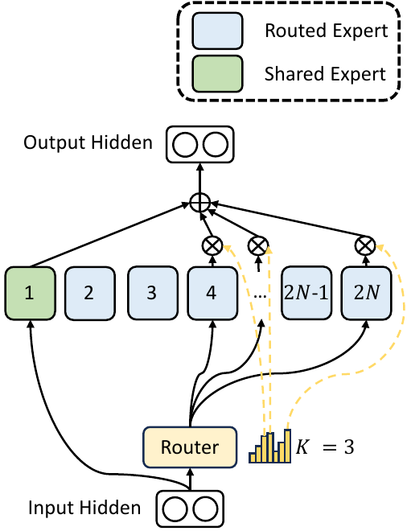
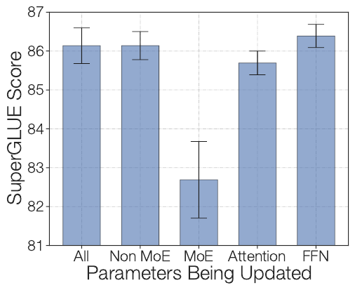

GPUs, memory and failures
On this page
One MoE layer, as built in Mixture of Experts (MoE), is the starting point. Real models add balancing without a loss, choices of how many experts and how big, and a way to spread the experts over many GPUs.
The balance loss pulls against the task loss: too small a weight leaves the load uneven, and too large a weight hurts quality (Wang et al. 2024, their Fig. 2). DeepSeek-V3 (DeepSeek-AI, 2024) instead keeps a per-expert offset that is used only for picking, so nothing pulls on the task loss. It also scores experts with a sigmoid instead of a softmax: the illustrative scores of Mixture of Experts, section 2 become 0.77, 0.73, 0.45 and 0.50 for “cat”.
At step 1 every bias is 0. E1 takes 3 tokens and E2 and E3 none, so MaxVio, how far the busiest expert sits above the mean, is 2.0. One update with an illustrative step γ = 0.1 (DeepSeek-V3 uses 0.001) sets the biases to −0.1, +0.1, +0.1 and 0, and at step 2 every expert gets one token. Keep a small offset per expert that only changes who gets picked; after each step, lower it for busy experts and raise it for idle ones.
Sigmoid scores, a bias that only picks, and the bias update after each step.
The toy runs this rule with 8 experts, top‑2, 512 tokens a step and a frozen router that prefers E1; a token counts once for each of its 2 experts, so an even share is 2·512/8 = 128 tokens per expert.
Too small a step balances late, too large a step keeps swinging, and in between it settles; the bottom row shows each bias minus the average, since only the differences between biases change a pick. Each step moves a bias by only γ, so a run of tens of thousands of steps can afford a far smaller γ than this 60-step toy: Wang et al. tried 0.0001, 0.001 and 0.01 over 40k steps, saw the smallest balance late and the largest swing late, and chose 0.001 (their Fig. 4). DeepSeek-V3 runs this on 256 experts with γ = 0.001.
The bias is carried between steps and updated once per step, after the batch’s loads are counted. DeepSeek-V3 also keeps a tiny balance loss computed per sequence instead of per batch, with weight α = 0.0001, so no single sequence piles onto one expert.
Designs differ in how many experts run per token, how small they are, and whether some always run.
Switch (Fedus et al., 2021) sends each token to 1 expert, and GShard (Lepikhin et al., 2020) to 2 with renormalized gates; Figure 4 draws both with an illustrative 16 experts. Mixtral (Jiang et al., 2024) has 8 experts per layer and uses 2 per token. DeepSeekMoE (Dai et al., 2024) splits each expert into smaller ones and adds shared experts that every token uses. At the same weights and compute, 16 experts choosing 2 give 120 combinations, while 64 choosing 8 give 4,426,165,368. DeepSeek-V3 uses 1 shared and 8 of 256 routed experts, balanced by the bias of section 1. ST-MoE (Zoph et al., 2022) puts an MoE layer in every fourth block, the setting behind the fine-tuning results of section 6.
Each Mixtral expert is a SwiGLU FFN: three weight matrices instead of two. One branch passes through SiLU, a smooth curve shaped like ReLU, and multiplies a second branch element by element before the output matrix. One expert holds 176.2M weights, three matrices of 4,096 by 14,336.
DeepSeekMoE draws the shared experts in its own figure. It numbers experts 1 to 2N because it splits each of N experts in two, and its K = 3 is this page’s k.

MMoE (Ma et al., 2018) uses the same gate idea for multitask learning rather than scale: shared experts with one gate per task. It is the hard-sharing setup of Introduction to Multitask Learning, section 3, with a learned mix per task.
Big MoE models use expert parallelism: different experts sit on different GPUs, so tokens travel to their experts. In an all-to-all exchange, every GPU sends a different slice of its tokens to every other GPU. Each MoE layer needs two in the forward pass: dispatch and combine (Switch, section 5.4).
A node is one machine holding several GPUs; DeepSeek-V3 has 8 per node. Its node-limited routing lets each token’s experts sit on at most M = 4 nodes, which cuts traffic between machines.
Compute follows the experts a token uses; memory follows all of them. In bfloat16, a 16-bit number format (Mixture of Experts, section 5), Mixtral’s 47B weights take about 94 GB at 2 bytes each, while each token uses only 13B of them, about 26 GB. In Mixtral’s words, “The memory costs for serving Mixtral are proportional to its sparse parameter count”. Storing weights in fewer bits (Quantization, section 1) shrinks what has to sit in memory, and DeepSeek-V3 serves extra copies of its busiest experts.
Each expert sees about kT/N tokens of a batch (Figure 8). Shazeer et al. (2017) call this the shrinking batch problem: with many experts, each one’s batch gets small and runs inefficiently. The fix is data parallelism: several GPUs each run a different slice of the batch through their own copy of the non-expert weights, and all send tokens to one shared copy of each expert.
ST-MoE names two problems that held MoE back, “training instabilities and uncertain quality during fine-tuning”. The training one shows as loss spikes (section 9); the fine-tuning one is mostly overfitting.
ST-MoE fine-tunes its large model, ST-MoE-L, on SuperGLUE five ways. SuperGLUE is a harder successor to GLUE; both are sets of English understanding tasks such as question answering and entailment. Updating all weights, only the non-MoE weights, or only the dense FFNs scores about the same; updating only attention scores a little lower; updating only the MoE weights drops sharply.

Expert layers sit in only every fourth block, and a token sees at most two experts per layer, so updating only them changes few of the weights a token uses. MoE models also overfit small tasks (Switch, section 2.4). Expert dropout helps: fine-tuning Switch-Base on GLUE, dropout 0.1 elsewhere with 0.4 inside the experts scores 85.2, against 84.7 with 0.1 everywhere. Dropout (Regularization and Data Augmentation, section 1.1) is the chance of zeroing a unit. ST-MoE adds a smaller batch and a higher learning rate.
Bias-balanced routing, then the bias update once per step.
import torch
def route_with_bias(z, b, k): # z: (tokens, n), b: (n,)
s = torch.sigmoid(z)
_, idx = (s + b).topk(k, dim=-1) # the bias only picks
g = s.gather(-1, idx)
g = g / g.sum(-1, keepdim=True) # gates from s alone
return g, idx
@torch.no_grad()
def update_bias(b, idx, n, gamma=1e-3):
load = torch.bincount(idx.flatten(), minlength=n).float()
b += gamma * torch.sign(load.mean() - load)
return loadRouter entropy, dropped-token rate and MaxVio for every MoE layer.
def log_router(load, keep, z):
max_vio = (load.max() - load.mean()) / load.mean()
dropped = 1 - keep.float().mean()
share = load / load.sum()
router_entropy = -(share * share.clamp_min(1e-9).log()).sum()
z_loss = torch.logsumexp(z, dim=-1).pow(2).mean()
return dict(max_vio=max_vio.item(), dropped=dropped.item(),
router_entropy=router_entropy.item(), z_loss=z_loss.item())| knob | enters | raise it | lower it | seen in |
|---|---|---|---|---|
| γ | bias card, line 4 | corrects faster, keeps swinging (Figure 3) | balances slowly; 0 freezes the bias | DeepSeek-V3: 0.001, then 0 for the last 500B tokens |
| sequence-wise α | added loss | stronger guard per sequence, small pull on the task loss | one sequence can crowd an expert | DeepSeek-V3: 0.0001 |
| expert dropout | inside the experts | helps small fine-tuning tasks (section 6) | more overfitting | Switch: 0.4 in experts; 0.2 or 0.3 everywhere scored 84.4 and 83.9 |
| M | routing | more experts reachable, more traffic | less traffic between machines | DeepSeek-V3: 4 nodes |
| k and N | bias card, line 2 | smaller experts, more combinations | fewer, larger experts | DeepSeek-V3: 8 of 256 plus 1 shared; Mixtral: 2 of 8 |
The router runs for every generated token (Softmax, Temperature and Decoding, section 8.1), and Transformer Cost and Efficiency counts what the rest of the block costs.